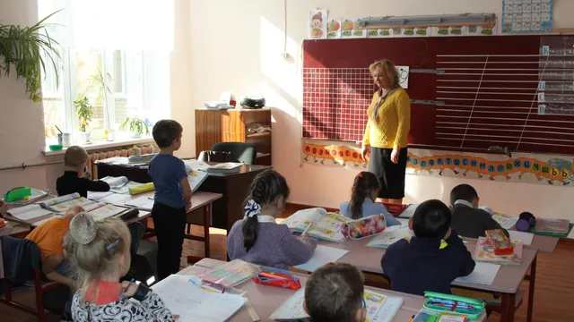
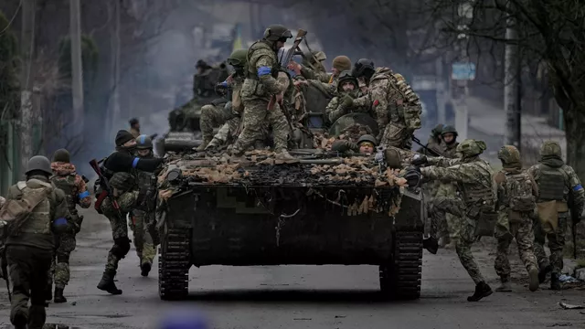
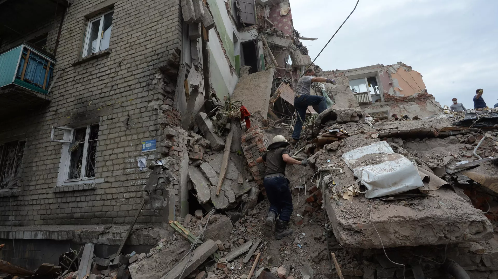

Снежное ( до 1864 — Васильевка; ) — город областного подчинения в Донецкой области. Фактически с 2014 года находится под контролем самопровозглашённой Донецкой Народной Республики.
В городском подчинении находятся Северная, Андреевская, Горняцкая, Первомайская и Залесненская поселковые администрации.

